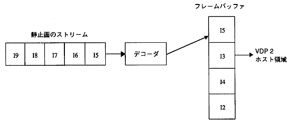

★PROGRAMMER'S GUIDE
★MPEGライブラリ
★PROGRAMMER'S GUIDE
★MPEGライブラリ
▲
戻る｜
進む▼
MPEGライブラリ
9.静止画の再生
- 静止画の再生は、すべてのピクチャがIピクチャで構成されるMPEGストリームを、順次デコードすることによって再生されます。イメージデータを格納するフレームバンクを指定してデコードします。また、表示するフレームバンクを独立に指定できます。
図9.1 静止画の再生

- 静止画のデコードは、以下の手順の繰り返しによって行います。
- デコード準備が完了するまでMPG_IsDecReady関数を呼ぶ。
- MPG_SpDecNext関数によってデコードを実行する。
- 小さい画像をデコードする場合に、この手順を実行する間隔が16.7ms以下になると、ストリームによってはデコードできない場合があります。
- また、静止画のストリームは以下の３つの条件を満たしていなければなりません。
- 画像データが連続して入っていること
- ストリームの最後にシーケンスエンドコードが入っていること
- シーケンスエンドコードの後に16ワードのダミーデータが入っていること
▲
戻る｜
進む▼
★PROGRAMMER'S GUIDE
★MPEGライブラリ
Copyright SEGA ENTERPRISES, LTD., 1997